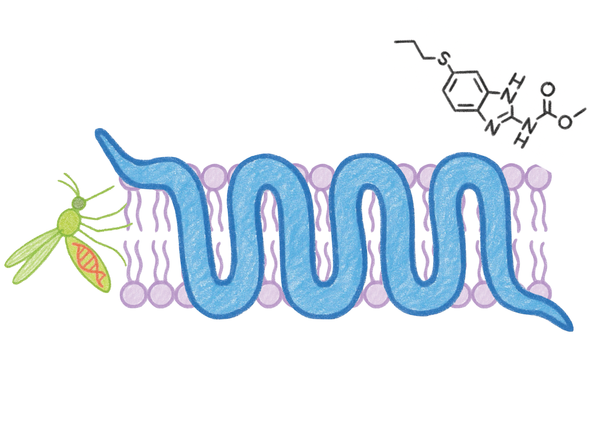
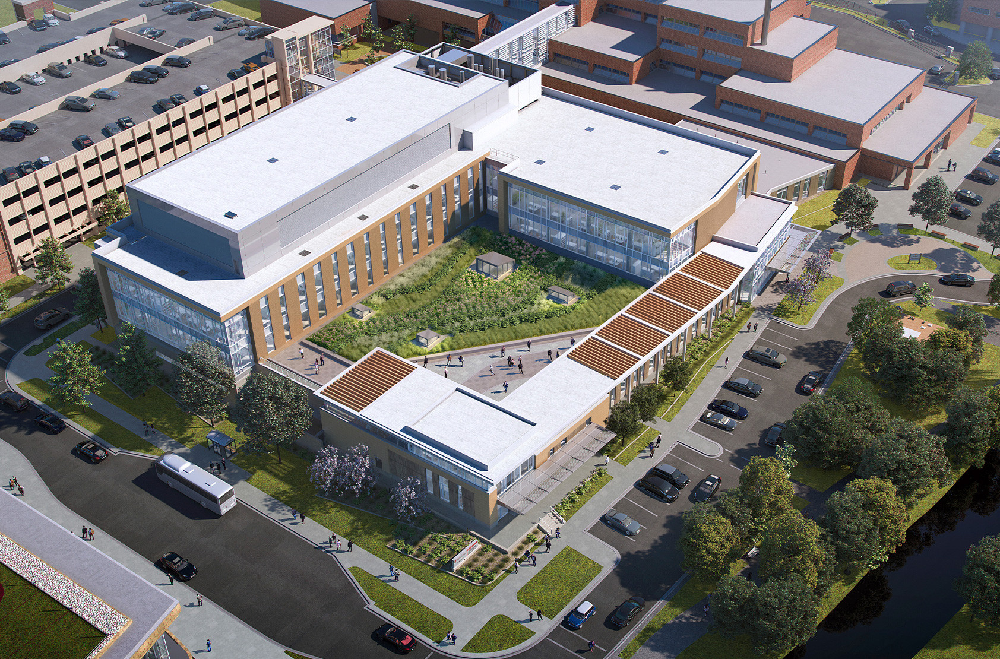
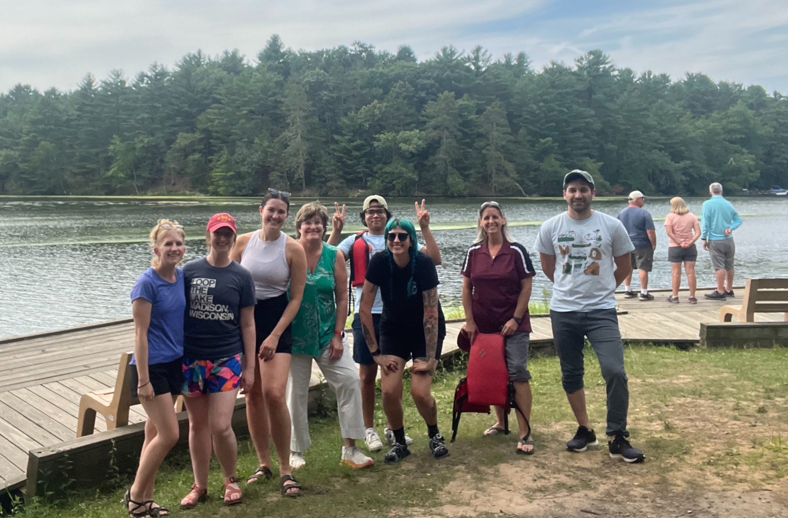
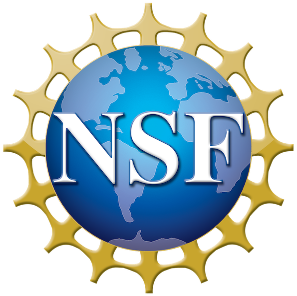
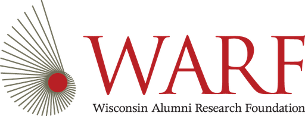
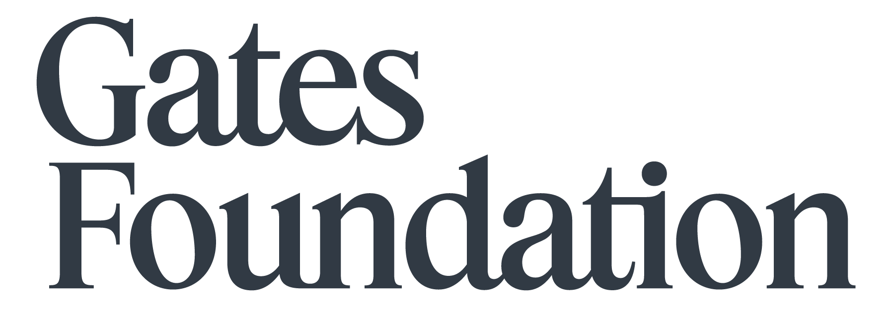

We are a research lab in the Department of Pathobiological Sciences at the University of Wisconsin—Madison. We pair experimental and computational approaches to study neglected parasitic diseases and host-pathogen interactions, with the goal of identifying molecular drivers of successful infection. Our mission is to illuminate the biology of these complex pathogens, advance human and animal health through new therapeutics, and to facilitate the training of scientists at every career stage.

Lab News
Apr 2026
Congrats to Katie Ryan for a successful PhD defense!
Apr 2026
Dante is awarded an NSF GRFP Award!
Dec 2025
Dante James will join the lab as a PhD student in the MDTP program co-advised by Nancy Keller.
Nov 2025
Cole Knuese successfully defended his dissertation!
Jul 2025
Work on orotopical bat rabies vaccine led by Cole Knuese profiled in Science Magazine.
Jun 2025
Congrats to Clair Henthorn for completing her PhD! Clair is now a Scientist at PPD (Thermo Fisher).
Jun 2024
Katie and Natalia presented at AAVP in St. Louis. Katie won the Best Student Oral Presentation Award!
Sep 2024
Natalia Betancourt joins the lab as a PhD student through the CBMS program.
Jul 2024
Clair, Elena, and Katie presented talks and posters at the AAVP Meeting in Atlanta and took home presentation awards.
Aug 2023
Kendra has successfully defended her PhD and will be starting a postdoc at UC-Berkeley. Congrats Dr. Dahmer!
Jul 2023
New paper on Mansonella diagnostics and epidemiology in the Colombian Amazon.
Jun 2023
The lab helped host and presented posters at Mol Helm 2023 in Madison.
Apr 2023
Two new preprints resulting from Elena Rehborg and Lenny Nunn's undergrad projects.
Mar 2023
Welcome to GHI Postdoctoral Fellow Sebastián Díaz! Sebastian will be stationed in Medellin, Colombia.
Sep 2022
New preprint led by Clair using a single-cell atlas to investigate secretory behaviors and drug targets.
Sep 2022
New preprint led by Kendra on muscarinic receptors as anthelmintic targets.
Aug 2022
Monica joins us as a GHI Visiting Scholar.
Aug 2022
Kendra, Clair, and Katie presented their work at the Midwest Neglected Infectious Disease Meeting at Notre Dame.
Jul 2022
New preprint led by Nic on multivariate screening for macrofilaricide discovery.
May 2022
New preprint and software package for image-based phenotyping of parasites.
Apr 2022
Dr. Monica Palma-Cuero is awarded a GHI Visiting Scholar award.
Apr 2022
Spatial transcriptomics paper appears in PLoS Pathogens.
Jan 2022
Nic Wheeler has accepted an Assistant Professor position at UW-Eau Claire starting in the Fall.
Oct 2021
JB Collins joins us as a postdoc on an anthelmintic resistance project jointly mentored through Northwestern University.
Aug 2021
New preprint on spatial transcriptomics and antiparasitic target prioritization in a human filarial parasite.
Jun 2021
Opinion piece on high-content anthelmintic screening now out in Trends in Parasitology.
Mar 2021
Kendra receives an Honorable Mention for the Ford Foundation Predoctoral Fellowship.
Dec 2020
Nic awarded an NIH F32 fellowship to study parasite sensory behaviors.
Dec 2020
Katie Ryan joins our lab as a PhD student through the CMP program.
Dec 2020
Collaboration on ivermectin modulation of parasite vesicle release appears in the Journal of Extracellular Vesicles.
Nov 2020
Filarial long-read RNAseq paper appears in PLOS NTD.
Nov 2020
Kendra, Nic, and Mostafa present posters and talks at the 2020 ASTMH Annual Meeting.
Jun 2020
Preprint on long-read RNA-Seq in human and animal filarial parasites now online.
Jun 2020
Paper on sensory behaviors of parasites that cause lymphatic filariasis in press at PLoS Biology.
May 2020
The lab receives Global Health Institute grant to study filarial parasites infecting indigenous populations in Amazonia.
May 2020
Elena receives Honorable Mention for the UW Sophomore Research Fellowship.
Mar 2020
Clair Henthorn joins us as a CBMS PhD student.
Feb 2020
The lab receives NIH/NIAID R01 to study parasite secretory function and new strategies to disrupt host-parasite interactions.
Dec 2019
Review on schistosome vector control and gene drive potential is published.
Sep 2019
Paul presents poster and talk at the BSP / ISP joint meeting in Belfast; won 1st place poster prize.
Sep 2019
Kendra is appointed to the NIH PVB T32 training grant.
Sep 2019
Nic will be giving an invited talk at the PacBio North America User Group Meeting.
Jun 2019
New preprint on filarial chemosensory biology available on bioRxiv.
Jun 2019
We wish our first cohort of lab undergrads success in their journeys ahead! Eric Chen (NIH IRTA Fellow), Alexis Mann (PhD, Johns Hopkins), Katie Kudrna (DVM, UW-Madison).
May 2019
Nathalie Dinguirard joins us from the Yoshino Lab as a joint research specialist.
Apr 2019
Eric, Tran, and Katie present posters at UW Undergraduate Research Symposium.
Apr 2019
Kendra receives 2019 NSF GRFP Honorable Mention.
Feb 2019
The lab is excited to share our latest work at the upcoming Molecular Helminthology and WAAVP 2019 meetings.
Oct 2018
Large-scale helminth genomics effort appears in Nature Genetics. Our lab contributed primary analyses of potentially druggable GPCRs and ion channels.
Sep 2018
New preprint with Bartholomay & Kimber labs on chemosensation in filarial parasites.
Sep 2018
Kendra joins the lab as a CBMS PhD student. Abdi, Gabi, and Nick join us as undergrad researchers.
Sep 2018
Collaboration on the Bge cell line is published.
Aug 2018
Nic presents at the 15th International Symposium on Schistosomiasis in Rio de Janeiro.
Jul 2018
Zach joins the lab as a research intern.
Jul 2018
Paul Airs joins the lab as a Postdoc.
May 2018
Kathy Vaccaro joins the lab as a Research Specialist.
Apr 2018
Paper on stage and sex-specific differences in Brugia exosome cargo in press at PLoS NTD.
Apr 2018
Benzimidazole paper appears in PLoS NTD.
Dec 2017
Lab contributes to BioRxiv preprint on comparative genomics of major helminths.
Oct 2017
BioRxiv preprint on the discovery of genetic loci underlying benzimidazole resistance.
Aug 2017
Alexis joins the lab as an Honorary Research Fellow.
Aug 2017
Contribution to Nature Communications paper on the genetics of a phoretic behavior.
May 2017
Nic joins the lab as a Merck KGaA Postdoc Fellow.
May 2017
Justice joins the lab as an Undergrad Lab Assistant.
Mar 2017
Lab receives NIH/NIAID K22 Phase II Award.
Feb 2017
Divyaa joins the lab as a joint Research Intern.
Feb 2017
Eric joins as an Undergraduate Researcher.
Feb 2017
Troy joins the lab as a Research Specialist.
Jan 2017
The lab officially opens.


Past & present funding


